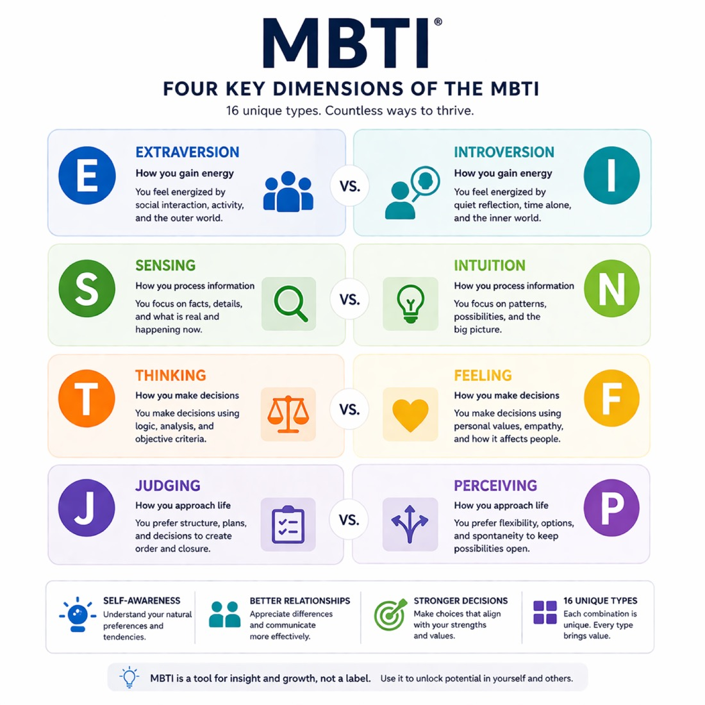

Our Core Profiling Frameworks

MBTI® (Myers-Briggs Type Indicator)
Focus: Understanding Cognitive Preferences.
The MBTI® framework explores how individuals process information and make decisions. By identifying 16 distinct personality types, this workshop provides a common language for teams to understand diverse working styles. It is an essential tool for improving long-term team dynamics, enhancing career development, and reducing misunderstandings rooted in different mental perspectives.
Explore the Workshop
DISC Profiling
Focus: Decoding Workplace Behavior.
DISC is a practical, behavioral assessment tool that categorizes individuals into four primary styles: Dominance, Influence, Steadiness, and Conscientiousness. Because DISC focuses on observable actions, it is the premier choice for improving immediate communication, sales effectiveness, and conflict resolution. We teach participants how to "flex" their style to better connect with and influence others in real-time.
Explore the Workshop
The Enneagram
Focus: Uncovering Core Motivations.
While other tools look at how we behave, the Enneagram explores why. This deep-dive framework identifies nine personality types based on core fears and desires. In a leadership context, the Enneagram is a powerful catalyst for Emotional Intelligence (EQ), allowing senior executives to uncover the internal drivers that influence their decision-making and interpersonal impact.
Explore the Workshop
Lumina Spark
Focus: Behavioral Versatility and the Paradox of Personality.
Lumina Spark is a next-generation tool that moves beyond traditional "types" or "boxes." It is built on the Big Five personality traits but utilizes a unique system that allows individuals to hold seemingly "opposite" qualities simultaneously, giving teams a richer, more accurate picture of how they really show up at work.
Explore the Workshop